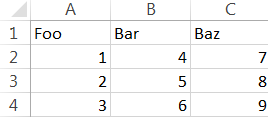

Write a Python dictionary to a CSV file
Writing a dictionary in Python to a CSV file allows you for example to render a graph with data (from that dictionary).
I had a file with a lot of data. To be able to interpret that data in a visual way, I wrote a script to parse the data I needed from that file. After putting that same data in a dictionary, I was able to generate a CSV file. Finally, when I opened the CSV in Microsoft Excel I could plot a graph with my data.
The reason I choose a dictionary is because every key can be seen as a column header. The values are arrays, which represents the datarows.
Here are the 3 steps:
1 Building the dictionary.
This is just an example of how the dictionary should look like. The Python script can populate the dictionary.
dictionary = { "Foo": [1,2,3],
"Bar": [4,5,6],
"Baz": [7,8,9] }
2 Import the modules.
import csv
from itertools import zip_longest
3 Writing to a CSV file.
with open("output.csv", "w") as outfile:
writer = csv.writer(outfile)
writer.writerow(list(dictionary.keys()))
writer.writerows(list(zip_longest(*dictionary.values())))
When opened in Microsoft Excel, you get this output:
